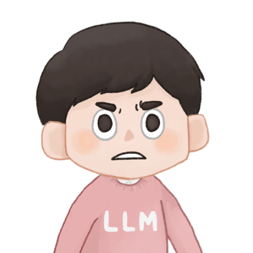

そもそも、どんな場面で使うスキル？
マジくん:
「社内IT担当エンジニア向け」って書いてありますけど、具体的にどんな技術を図解するんですか？
マスター:
「初めて使う未知の技術を自分で設定・利用するとき」のためのスキルです。
原理原則を理解して、自分の言葉で上長や関係者に説明できるようになること — それがゴールです。
使う人
社内IT担当エンジニアが、自分の業務に特化して作ったスキル
使う場面
SaaS（クラウドサービス）設定変更・新技術の導入・障害対応の理解
ゴール
「なぜその設定にしたか」を根拠を持って上長に説明できる
スキルの育て方：最初はダメだった
マスター:
最初のスキル（AIへの指示書）は荒削りで、生成された図解も「なんか違う」の連続でした。
だから育てました。図解へのFB（フィードバック）をスキル自体に反映させながら、少しずつよくしていったんです。
スキル改善ループ
改善指示の黄金パターン
「自分の改善案」 ＋ 「あなたの改善提案も聞かせて」
→ 自分の案にプラスαした提案が返ってくることが多かった。あとは採用するだけ！
「この表現は読み手がイメージしにくいと感じた。具体例がないからだと思うのですが、あなたの改善案も聞かせてください」
「具体例不足はその通りです。加えて ①フローが動詞のみで場面が浮かばない ②黄金パターンが型だけで送信文がない ③マジくんが理解確認のみ——の 3点も原因と考えます」
自分の仮説にプラスαの視点が返ってきた。あとは「どれを採用するか」の判断のみ。
マジくん:
なるほど、「自分の仮説 ＋ あなたの案も教えて」で返すと、AIが自分の意図を起点にプラスαしてくれるんですね。「AIに全部丸投げ」とは全然違う！
構成の工夫
図解の「読みやすさ・理解しやすさ」を上げるために追加・改善した4点
冒頭に「ざっくり一言」
問いに対する本質的な答えを 30字以内 で冒頭に置く。読んだ瞬間に「何の話か」がわかる粒度に。
例:
「ChatGPTとClaudeの違いは、
得意な作業の種類と文書量の上限にある」
ASCIIアートで全体像を俯瞰
詳細に入る前に「登場人物と流れ」を一枚絵で把握させる。文字だけで描く図（テキスト構造図）は、どんな環境でも崩れない。
例: Slack でメッセージが届くまでの流れ
[自分のPC] ── ① 送信 ──▶ [Slackサーバ]
│
② 届いてる？ ─▶ [相手のスマホ]
│
③ 通知 ◀─ プッシュ通知
30代エンジニアが調べないとわからない略語に補足
判断の目安: 「調べないとわからない用語のみ」に絞る。補足が多すぎると視覚ノイズになる。
SSO（一度のログインで複数サービスに入れる仕組み）
URL, PDF, Wi-Fi
「この説明の根拠はこれ」がその場でわかる
末尾にURLをまとめると「どれがどの説明の根拠か」が追えなくなる。説明の直後に置くことで、読みながら即確認できる。
デザインの工夫
見た目のクオリティを上げるために試したこと・選んだこと

マジくん:
Appleのサイトを参考にしたと聞きましたが、具体的にどういう方法を使ったんですか？
マスター:
apple.com を「このスタイルで作って」と渡すだけでデザインが一変しました。言語化しにくいデザインの方向性は、参照URLを渡すのが最も確実な方法です。
Before / After — デザインの変化イメージ
Before
SAE 同時認証交換 を用いた認証方式。PMF 管理フレーム保護 により…
📎 参照した一次情報 ↓
• Wi-Fi Alliance WPA3 Specification
• RFC 7664 Dragonfly Key Exchange
- 略語バッジが多く視覚ノイズ
- 参照リストが末尾で孤立
- 冒頭に「ざっくり一言」なし
After（Apple スタイル）
- 黒×白セクション交互でシンプル
- 出典は主張の直後にインライン
- 冒頭「ざっくり一言」を優先表示
Apple スタイルの採用
apple.com を参照渡しして「このスタイルで」と指示。言語化不要でデザイン方向性を伝えられた。
シンプルにしすぎると要点が埋もれやすい。強調のメリハリが課題。
見出しにイメージアイコンを付与
シンプルさと情報量はトレードオフ。見出しに解説の『イメージアイコン』を付与。スッと頭に入る構成を採用。
スクロールしてもついてくるナビ（お気に入り）
スクロールしても上部に章リンクが残り続ける。長い図解でもどこにいるか迷わない。発表時のジャンプにも便利。
まとめ — このスキルから学んだこと
マスター:
スキルは「作って終わり」ではなく「育てるもの」です。
FB → 改善 → 再実行のループを速く回すほうが、最初から完璧を目指すより精度が上がります。
このスキル作成から持ち帰ってほしい3点
スキルは育てるもの。 最初の出力に一喜一憂せず、FB × 改善ループを速く回す
改善指示は「自分の案 ＋ AI の提案も聞く」セットで。 AI が上乗せした改善を GO 出しするだけでどんどんよくなる
デザインは「参照渡し」が楽。 言語化しにくいデザインはサイトURLを直接渡して「このスタイルで」と伝えるだけでいい